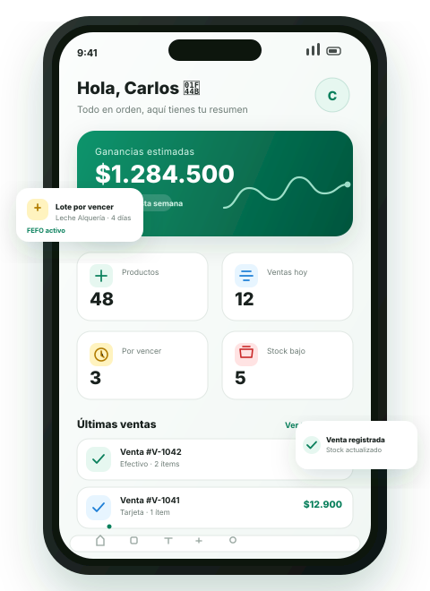
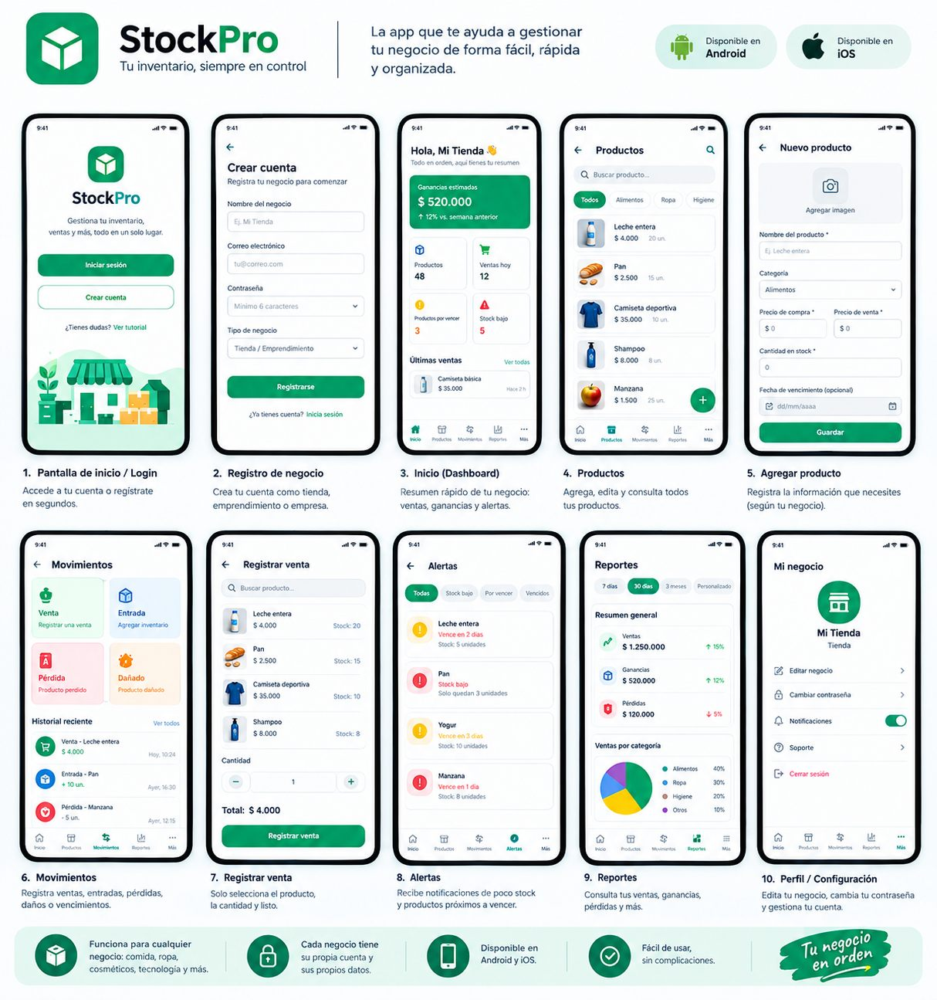

Pérdida invisible por vencimiento
Los lotes vencidos se descubren cuando ya no se pueden vender. Nadie avisa con días de anticipación y el margen se pierde en el estante.
Alertas de 7 días y salida FEFOStockPro es una app Android nativa con backend Spring Boot que controla productos, lotes y vencimientos, registra ventas transaccionales con salida FEFO, calcula impuestos de Colombia, EE. UU. y la Zona Euro, y entrega reportes en COP, USD y EUR.

«Sé que tengo leche, pero no sé cuál se vence primero. Sé que vendí, pero no sé cuánto gané.»
Esa es la realidad de miles de tiendas y minimercados: operación manual, sin trazabilidad y sin datos para decidir.
Los lotes vencidos se descubren cuando ya no se pueden vender. Nadie avisa con días de anticipación y el margen se pierde en el estante.
Alertas de 7 días y salida FEFOLas ventas y las entradas no dejan rastro. El inventario del sistema se separa del inventario real y las compras se hacen por intuición.
Movimientos con stock anterior y posteriorUn producto puede estar exento de IVA, tener tarifa diferencial o pagar Sales Tax estatal. Un porcentaje único distorsiona el precio y la ganancia.
Tarifas 2026 por país y categoría fiscalCada paso corresponde a pantallas y reglas implementadas en la aplicación, no a una maqueta.
País, moneda base y propietario en una cuenta con JWT y roles.
Productos, categorías, costo, precio, stock mínimo y categoría fiscal.
Vencimientos, alertas de 7 días y bajas con pérdida valorizada.
Venta multiproducto atómica, impuesto por línea y comprobante.
Ganancia, margen, rotación, pérdidas y multimoneda.
Siete capacidades que cubren el día a día de una tienda, minimercado o bottega.
Búsqueda en tiempo real, filtros por categoría, imagen, unidad de medida, costo y precio oficial del backend.
Cada lote conserva cantidad inicial, disponible, fecha de ingreso y vencimiento. La alerta se activa a 7 días.
Carrito multiproducto, descuento autorizado hasta 30 %, impuesto por línea, descuento de stock y comprobante.
Programa mercancía sin inflar el stock. Al confirmar la recepción se crea el lote, se suma stock y se registra el movimiento.
Stock bajo, próximos a vencer y vencidos en una sola pantalla filtrable, con navegación directa al producto o lote.
Ventas, costo, ganancia, margen, impuestos, pérdidas y productos más y menos vendidos en COP, USD o EUR.
JWT HS256, access de 15 minutos, refresh rotativo de 7 días, BCrypt y aislamiento de datos por negocio.
La app presenta y valida formularios; el backend concentra stock, FEFO, impuestos, permisos y aislamiento por negocio. Room funciona como caché de lectura y EncryptedSharedPreferences protege los tokens.
adb reverse.
El repositorio contiene la app, la API, las migraciones y los datos demo necesarios para reproducir el flujo completo.
Requisitos, decisiones de arquitectura, modelo de datos, diagramas UML y guía reproducible. Abre cada pestaña para explorar.
Cada archivo se abre en GitHub y renderiza sus diagramas Mermaid.
Arquitectura, casos de uso y la secuencia crítica de venta. Se dibujan al abrir la pestaña.
UUID, NUMERIC para dinero, TIMESTAMPTZ para eventos y aislamiento por negocio.
El ERD completo incluye tarifas de impuesto, tasas de cambio, proveedores, notificaciones y auditoría. La venta congela moneda, tasa, precio, costo y tarifa para que el histórico no cambie.
Cada ADR explica el contexto, la alternativa descartada y el costo de la decisión.
Elige Docker o PostgreSQL nativo, arranca el backend y conecta el emulador o tu teléfono.
# Levanta PostgreSQL 16 con la base y el usuario demo
docker compose up -d
docker compose ps
Docker crea stockpro_db y stockpro_user. Las tablas las crea Flyway cuando arranca Spring Boot.
-- 1. Crea usuario y base CREATE USER stockpro_user WITH PASSWORD 'stockpro_password'; CREATE DATABASE stockpro_db OWNER stockpro_user; GRANT ALL PRIVILEGES ON DATABASE stockpro_db TO stockpro_user; -- 2. Conéctate a stockpro_db y habilita pgcrypto CREATE EXTENSION IF NOT EXISTS "pgcrypto";
No crees tablas a mano. Flyway aplica V1, V2 y V3 al arrancar el backend.
cd backend mvn spring-boot:run # Alternativa sin Maven: abre backend/pom.xml en el IDE # y ejecuta StockProApplication
carlos@mitienda.com
robert@cornermarket.com
matteo@bottegaroma.it
Contraseña para las tres cuentas demo: Password123*
Inicia el emulador y ejecuta el reverse antes de abrir la app:
& "$env:LOCALAPPDATA\Android\Sdk\platform-tools\adb.exe" reverse tcp:8080 tcp:8080 & "$env:LOCALAPPDATA\Android\Sdk\platform-tools\adb.exe" reverse --list
Si adb está en el PATH, basta con adb reverse tcp:8080 tcp:8080.
Activa Depuración USB, conecta el cable y autoriza el equipo en el teléfono. Luego:
& "$env:LOCALAPPDATA\Android\Sdk\platform-tools\adb.exe" devices & "$env:LOCALAPPDATA\Android\Sdk\platform-tools\adb.exe" reverse tcp:8080 tcp:8080 & "$env:LOCALAPPDATA\Android\Sdk\platform-tools\adb.exe" reverse --list
Debe aparecer tcp:8080 tcp:8080. Si no conecta, revisa el firewall y vuelve a autorizar la depuración USB.
Abre la raíz del repositorio en Android Studio, selecciona el módulo app y pulsa Run ▶. Inicia sesión con una cuenta demo.
adb reverse. Verifica con adb reverse --list.netstat -ano | findstr :8080, termina el proceso o cambia server.port.application.yml. Define DB_USER y DB_PASSWORD o recrea el usuario.CREATE DATABASE y vuelve a arrancar el backend.flyway repair si sabes lo que haces.10.0.2.2 como alternativa.-Xmx2g, cierra Docker si usas PostgreSQL nativo y usa un emulador API 30 con 2 GB.-Xmx4g; Docker con 2 GB y emulador con 2–3 GB.-Xmx6g; puedes dejar Docker y el emulador abiertos.Detén el daemon al terminar con gradle --stop y cierra el emulador cuando no lo uses.
¿Sin Docker? La guía visual explica PostgreSQL nativo con pgAdmin, variables de entorno,
la ruta completa de adb.exe, solución de problemas y optimización de RAM.
Repositorio público con la app, la API, las migraciones y toda la documentación del ABP. El diseño y el prototipo están disponibles en Figma.